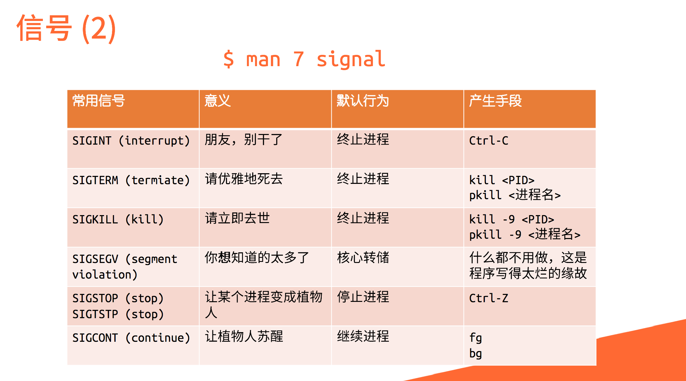

深入理解计算机核心概念
如果现在提起计算机操作系统，可能多数人的第一反应就是大名鼎鼎的 Windows，此外有些人可能也接触过 macOS 或者 Linux 的各类发行版（如：Ubuntu, Fedora, Manjaro, CentOS 等），它们都是计算机操作系统。
Ubuntu
Debian
现代个人计算机操作系统功能复杂，但总体来说，一直是用户与底层硬件交流的桥梁。
简单而不太严谨地来说，进程就是已被载入的程序：当我们启动一个程序的时候，操作系统会从硬盘中读取程序文件，将程序内容加载入内存中，之后CPU就会执行这个程序。
如果说进程是操作系统分配资源的基本单位（好比一座工厂），那么线程就是CPU调度的基本单位（工厂里的生产线）。一个进程可以包含一个或多个线程，它们共享进程的内存空间和资源，但每个线程有自己独立的执行栈和程序计数器。
| 特性 | 进程 | 线程 |
|---|---|---|
| 基本单位 | 资源分配的基本单位 | CPU调度的基本单位 |
| 资源开销 | 创建和销毁开销大 | 创建和销毁开销小（轻量级） |
| 内存空间 | 拥有独立的内存地址空间 | 共享所属进程的内存空间 |
| 通信方式 | 复杂，需专门的IPC机制（如管道、套接字） | 简单，可直接读写共享数据（需注意同步） |
| 健壮性 | 一个进程崩溃不影响其他进程 | 一个线程崩溃会导致整个进程崩溃 |
sudo apt install htop
来即时查看。]
ps
仅显示当前终端的相关进程。
ps aux：显示所有进程。
PID (Process Identifier) 是一个数字，是进程的唯一标识。当用户想挂起、继续或终止进程时，可以使用PID作为索引。
为了让多个程序看起来“同时”执行，操作系统需要快速地在进程之间切换计算资源，这引入了进程优先级和进程状态的概念。
nice -n 10 vim
在运行时指定优先级，或
renice -n 10 -p 12345
重新指定优先级。

图：信号处理机制示意图
kill -l：显示所有信号名称。
ls -l | grep ".txt"，`ls`的输出通过管道成为了`grep`的输入。
kill
命令向进程发送信号。在htop中按K键也可以方便地发送信号。
&：将命令放到后台运行 (./matmul &)。
SIGTSTP
信号，使前台进程挂起。
jobs：查看当前shell中挂起或后台运行的进程。
fg %N：将代号为N的后台进程切换到前台。
bg %N：将代号为N的挂起进程切换到后台继续运行。
nohup command &，使程序运行不受SIGHUP（终端关闭信号）影响，输出默认重定向到nohup.out。
tmux：启动一个新的tmux会话。
Ctrl+B %
(左右分屏),
Ctrl+B "
(上下分屏),
Ctrl+B d
(脱离会话),
Ctrl+B c
(新建窗口)。
tmux attach [-t session_name]：重新连接到会话。
操作系统的内存管理是保证程序正常运行的重要机制。现代操作系统引入了虚拟内存的概念，让每个进程都认为自己拥有独立的完整内存空间。
服务的特征意味着服务进程必须独立于用户的登录，不能随用户的退出而被终止。这类一直默默工作于后台的进程被称为守护进程 (daemon)。
systemctl status：一览系统服务运行情况。
systemctl start/stop/restart/reload [unit]：开启/关闭/重启/重载服务。
systemctl enable/disable [unit]：设置/取消服务开机自启。
systemctl daemon-reload：重载systemd配置，在创建或修改服务文件后执行。
.service文件将其注册为systemd服务，通常存放在/etc/systemd/system/目录下。
指基于时间的一次或多次周期性定时任务。在Linux中，主要通过at和crontab实现。
at now + 1min：一分钟后执行命令，命令从标准输入读取，或用
at -f script.sh now。
at -l：列出任务；at -r <编号>：删除任务。
at默认将标准输出和标准错误以邮件形式发送给用户。
crontab -e：编辑当前用户的定时任务配置文件。
# 分 时 日 月 星期 | 命令
* * * * * echo "hello" >> ~/count # 每分钟输出 hello 到家目录下 count 文件Shell 是Linux的命令解释程序，是用户和内核之间的接口。除了作为命令解释程序外，Shell同时还提供了一个可支持强大脚本语言的程序环境。
.bash_profile、.bashrc等文件配置环境变量。
alias ll='ls -alF'）。
alias：查看目前存在的别名。
type [命令]：检查命令是否被alias。
bash script.sh。
chmod a+x script.sh
后
./script.sh。
. venv/bin/activate）。
#!)：脚本文件首行的#!/bin/bash指定了该脚本的解释器。
;：按顺序执行。
&&：前一个成功才执行后一个。
||：前一个失败才执行后一个。
&：后台方式执行命令。
Shell支持在程序中使用变量，但它将任何变量值都当作字符串。
name=value
(等号两边不允许有空格)。引用时使用$name或${name}。
HOME：用户主目录。
LOGNAME：登录用户名。
PATH：命令搜索路径，路径以冒号分割。
PWD：用户当前工作目录路径。
export A=1：定义环境变量，在当前shell及其子进程中有效。
env：列出所有已定义的环境变量。
$0（程序名），$1, $2, ...（参数）。
$#：命令行上的参数个数。
$?：最后命令的退出代码（0表示成功）。
$$：当前进程的PID。
$*：命令行所有参数构成的一个字符串。
read
命令读取用户输入，并将内容赋值给变量。
read -p "Enter your name: " name
-r参数，避免反斜杠被视为转义符。
echo
和
printf
命令。
echo：输出变量信息。-n不输出换行，-e解析转义字符（如\n）。
printf：类似于C语言中的printf()函数，支持格式化输出。
Linux系统中的每个文件和目录都有特定的权限设置，决定了谁可以对其进行什么操作。
-rwxr-xr--，第一位是文件类型（-表示文件，d表示目录），后面每三位分别表示用户、组、其他的权限。
chmod
命令。
chmod 755 file：设置文件权限为rwxr-xr-x
chmod +x script.sh：给文件添加执行权限
chmod u+w,g-r file：给用户添加写权限，移除组的读权限
nohup
来运行他的网站。尝试指出这么做可能的问题。
systemd
相关工具输出以下内容的命令：
crontab
中两次任务执行的时间间隔，会发生什么事情？如果用
systemd timer，能否避免这个问题？